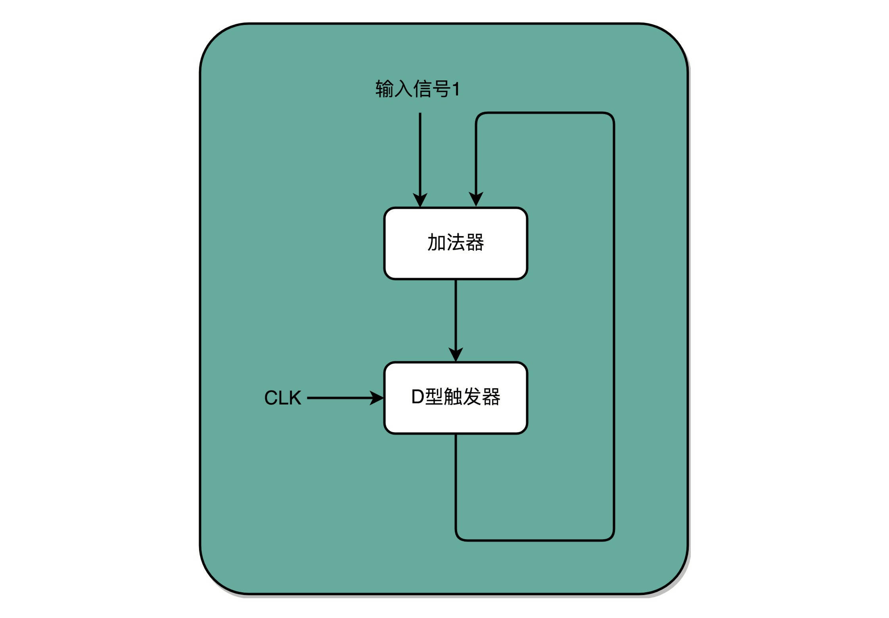
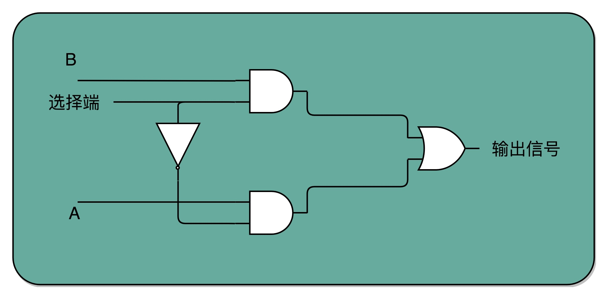
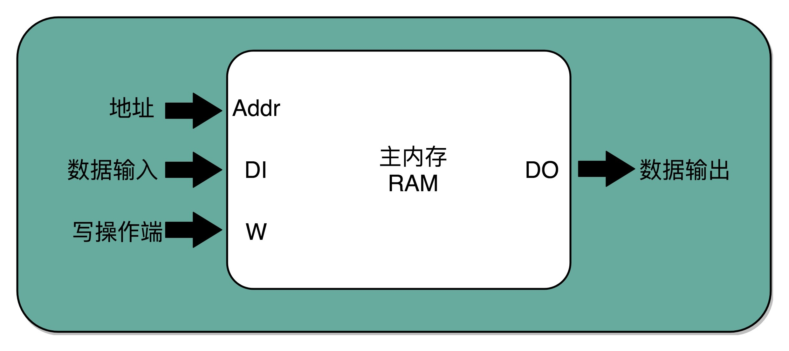
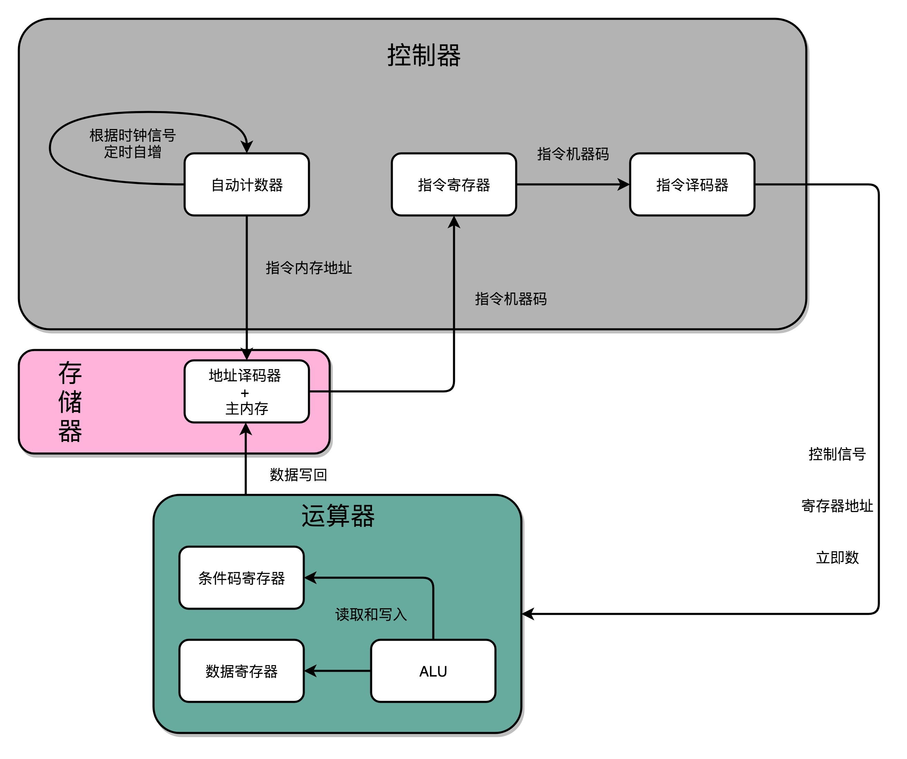

- 00 开篇词 为什么你需要学习计算机组成原理？.md.html
- 01 冯·诺依曼体系结构：计算机组成的金字塔.md.html
- 02 给你一张知识地图，计算机组成原理应该这么学.md.html
- 03 通过你的CPU主频，我们来谈谈“性能”究竟是什么？.md.html
- 04 穿越功耗墙，我们该从哪些方面提升“性能”？.md.html
- 05 计算机指令：让我们试试用纸带编程.md.html
- 06 指令跳转：原来if...else就是goto.md.html
- 07 函数调用：为什么会发生stack overflow？.md.html
- 08 ELF和静态链接：为什么程序无法同时在Linux和Windows下运行？.md.html
- 09 程序装载：“640K内存”真的不够用么？.md.html
- 10 动态链接：程序内部的“共享单车”.md.html
- 11 二进制编码：“手持两把锟斤拷，口中疾呼烫烫烫”？.md.html
- 12 理解电路：从电报机到门电路，我们如何做到“千里传信”？.md.html
- 13 加法器：如何像搭乐高一样搭电路（上）？.md.html
- 14 乘法器：如何像搭乐高一样搭电路（下）？.md.html
- 15 浮点数和定点数（上）：怎么用有限的Bit表示尽可能多的信息？.md.html
- 16 浮点数和定点数（下）：深入理解浮点数到底有什么用？.md.html
- 17 建立数据通路（上）：指令加运算=CPU.md.html
- 18 建立数据通路（中）：指令加运算=CPU.md.html
- 19 建立数据通路（下）：指令加运算=CPU.md.html
- 20 面向流水线的指令设计（上）：一心多用的现代CPU.md.html
- 21 面向流水线的指令设计（下）：奔腾4是怎么失败的？.md.html
- 22 冒险和预测（一）：hazard是“危”也是“机”.md.html
- 23 冒险和预测（二）：流水线里的接力赛.md.html
- 24 冒险和预测（三）：CPU里的“线程池”.md.html
- 25 冒险和预测（四）：今天下雨了，明天还会下雨么？.md.html
- 26 Superscalar和VLIW：如何让CPU的吞吐率超过1？.md.html
- 27 SIMD：如何加速矩阵乘法？.md.html
- 28 异常和中断：程序出错了怎么办？.md.html
- 29 CISC和RISC：为什么手机芯片都是ARM？.md.html
- 30 GPU（上）：为什么玩游戏需要使用GPU？.md.html
- 31 GPU（下）：为什么深度学习需要使用GPU？.md.html
- 32 FPGA、ASIC和TPU（上）：计算机体系结构的黄金时代.md.html
- 33 解读TPU：设计和拆解一块ASIC芯片.md.html
- 34 理解虚拟机：你在云上拿到的计算机是什么样的？.md.html
- 35 存储器层次结构全景：数据存储的大金字塔长什么样？.md.html
- 36 局部性原理：数据库性能跟不上，加个缓存就好了？.md.html
- 37 理解CPU Cache（上）：“4毫秒”究竟值多少钱？.md.html
- 38 高速缓存（下）：你确定你的数据更新了么？.md.html
- 39 MESI协议：如何让多核CPU的高速缓存保持一致？.md.html
- 40 理解内存（上）：虚拟内存和内存保护是什么？.md.html
- 41 理解内存（下）：解析TLB和内存保护.md.html
- 42 总线：计算机内部的高速公路.md.html
- 43 输入输出设备：我们并不是只能用灯泡显示“0”和“1”.md.html
- 44 理解IO_WAIT：IO性能到底是怎么回事儿？.md.html
- 45 机械硬盘：Google早期用过的“黑科技”.md.html
- 46 SSD硬盘（上）：如何完成性能优化的KPI？.md.html
- 47 SSD硬盘（下）：如何完成性能优化的KPI？.md.html
- 48 DMA：为什么Kafka这么快？.md.html
- 49 数据完整性（上）：硬件坏了怎么办？.md.html
- 50 数据完整性（下）：如何还原犯罪现场？.md.html
- 51 分布式计算：如果所有人的大脑都联网会怎样？.md.html
- 52 设计大型DMP系统（上）：MongoDB并不是什么灵丹妙药.md.html
- 53 设计大型DMP系统（下）：SSD拯救了所有的DBA.md.html
- 54 理解Disruptor（上）：带你体会CPU高速缓存的风驰电掣.md.html
- 55 理解Disruptor（下）：不需要换挡和踩刹车的CPU，有多快？.md.html
- 结束语 知也无涯，愿你也享受发现的乐趣.md.html
19 建立数据通路（下）：指令加运算=CPU
上一讲，我们讲解了时钟信号是怎么实现的，以及怎么利用这个时钟信号，来控制数据的读写，可以使得我们能把需要的数据“存储”下来。那么，这一讲，我们要让计算机“自动”跑起来。
通过一个时钟信号，我们可以实现计数器，这个会成为我们的 PC 寄存器。然后，我们还需要一个能够帮我们在内存里面寻找指定数据地址的译码器，以及解析读取到的机器指令的译码器。这样，我们就能把所有学习到的硬件组件串联起来，变成一个 CPU，实现我们在计算机指令的执行部分的运行步骤。
PC 寄存器所需要的计数器
我们常说的 PC 寄存器，还有个名字叫程序计数器。下面我们就来看看，它为什么叫作程序计数器。
有了时钟信号，我们可以提供定时的输入；有了 D 型触发器，我们可以在时钟信号控制的时间点写入数据。我们把这两个功能组合起来，就可以实现一个自动的计数器了。
加法器的两个输入，一个始终设置成 1，另外一个来自于一个 D 型触发器 A。我们把加法器的输出结果，写到这个 D 型触发器 A 里面。于是，D 型触发器里面的数据就会在固定的时钟信号为 1 的时候更新一次。

这样，我们就有了一个每过一个时钟周期，就能固定自增 1 的自动计数器了。这个自动计数器，可以拿来当我们的 PC 寄存器。事实上，PC 寄存器的这个 PC，英文就是 Program Counter，也就是程序计数器的意思。
每次自增之后，我们可以去对应的 D 型触发器里面取值，这也是我们下一条需要运行指令的地址。前面第 5 讲我们讲过，同一个程序的指令应该要顺序地存放在内存里面。这里就和前面对应上了，顺序地存放指令，就是为了让我们通过程序计数器就能定时地不断执行新指令。
加法计数、内存取值，乃至后面的命令执行，最终其实都是由我们一开始讲的时钟信号，来控制执行时间点和先后顺序的，这也是我们需要时序电路最核心的原因。
在最简单的情况下，我们需要让每一条指令，从程序计数，到获取指令、执行指令，都在一个时钟周期内完成。如果 PC 寄存器自增地太快，程序就会出错。因为前一次的运算结果还没有写回到对应的寄存器里面的时候，后面一条指令已经开始读取里面的数据来做下一次计算了。这个时候，如果我们的指令使用同样的寄存器，前一条指令的计算就会没有效果，计算结果就错了。
在这种设计下，我们需要在一个时钟周期里，确保执行完一条最复杂的 CPU 指令，也就是耗时最长的一条 CPU 指令。这样的 CPU 设计，我们称之为单指令周期处理器（Single Cycle Processor）。
很显然，这样的设计有点儿浪费。因为即便只调用一条非常简单的指令，我们也需要等待整个时钟周期的时间走完，才能执行下一条指令。在后面章节里我们会讲到，通过流水线技术进行性能优化，可以减少需要等待的时间，这里我们暂且说到这里。
读写数据所需要的译码器
现在，我们的数据能够存储在 D 型触发器里了。如果我们把很多个 D 型触发器放在一起，就可以形成一块很大的存储空间，甚至可以当成一块内存来用。像我现在手头这台电脑，有 16G 内存。那我们怎么才能知道，写入和读取的数据，是在这么大的内存的哪几个比特呢？
于是，我们就需要有一个电路，来完成“寻址”的工作。这个“寻址”电路，就是我们接下来要讲的译码器。
在现在实际使用的计算机里面，内存所使用的 DRAM，并不是通过上面的 D 型触发器来实现的，而是使用了一种 CMOS 芯片来实现的。不过，这并不影响我们从基础原理方面来理解译码器。在这里，我们还是可以把内存芯片，当成是很多个连在一起的 D 型触发器来实现的。
如果把“寻址”这件事情退化到最简单的情况，就是在两个地址中，去选择一个地址。这样的电路，我们叫作2-1 选择器。我把它的电路实现画在了这里。
我们通过一个反相器、两个与门和一个或门，就可以实现一个 2-1 选择器。通过控制反相器的输入是 0 还是 1，能够决定对应的输出信号，是和地址 A，还是地址 B 的输入信号一致。

2-1 选择器电路示意图
一个反向器只能有 0 和 1 这样两个状态，所以我们只能从两个地址中选择一个。如果输入的信号有三个不同的开关，我们就能从 2323，也就是 8 个地址中选择一个了。这样的电路，我们就叫3-8 译码器。现代的计算机，如果 CPU 是 64 位的，就意味着我们的寻址空间也是 264264，那么我们就需要一个有 64 个开关的译码器。

当我们把译码器和内存连到一起时，通常会组成这样一个电路
所以说，其实译码器的本质，就是从输入的多个位的信号中，根据一定的开关和电路组合，选择出自己想要的信号。除了能够进行“寻址”之外，我们还可以把对应的需要运行的指令码，同样通过译码器，找出我们期望执行的指令，也就是在之前我们讲到过的 opcode，以及后面对应的操作数或者寄存器地址。只是，这样的“译码器”，比起 2-1 选择器和 3-8 译码器，要复杂的多。
建立数据通路，构造一个最简单的 CPU
D 触发器、自动计数以及译码器，再加上一个我们之前说过的 ALU，我们就凑齐了一个拼装一个 CPU 必须要的零件了。下面，我们就来看一看，怎么把这些零件组合起来，才能实现指令执行和算术逻辑计算的 CPU。

CPU 实现的抽象逻辑图
- 首先，我们有一个自动计数器。这个自动计数器会随着时钟主频不断地自增，来作为我们的 PC 寄存器。
- 在这个自动计数器的后面，我们连上一个译码器。译码器还要同时连着我们通过大量的 D 触发器组成的内存。
- 自动计数器会随着时钟主频不断自增，从译码器当中，找到对应的计数器所表示的内存地址，然后读取出里面的 CPU 指令。
- 读取出来的 CPU 指令会通过我们的 CPU 时钟的控制，写入到一个由 D 触发器组成的寄存器，也就是指令寄存器当中。
- 在指令寄存器后面，我们可以再跟一个译码器。这个译码器不再是用来寻址的了，而是把我们拿到的指令，解析成 opcode 和对应的操作数。
- 当我们拿到对应的 opcode 和操作数，对应的输出线路就要连接 ALU，开始进行各种算术和逻辑运算。对应的计算结果，则会再写回到 D 触发器组成的寄存器或者内存当中。
这样的一个完整的通路，也就完成了我们的 CPU 的一条指令的执行过程。在这个过程中，你会发现这样几个有意思的问题。
第一个，是我们之前在第 6 讲讲过的程序跳转所使用的条件码寄存器。那时，讲计算机的指令执行的时候，我们说高级语言中的 if…else，其实是变成了一条 cmp 指令和一条 jmp 指令。cmp 指令是在进行对应的比较，比较的结果会更新到条件码寄存器当中。jmp 指令则是根据条件码寄存器当中的标志位，来决定是否进行跳转以及跳转到什么地址。
不知道你当时看到这个知识点的时候，有没有一些疑惑，为什么我们的 if…else 会变成这样两条指令，而不是设计成一个复杂的电路，变成一条指令？到这里，我们就可以解释了。这样分成两个指令实现，完全匹配好了我们在电路层面，“译码 - 执行 - 更新寄存器“这样的步骤。
cmp 指令的执行结果放到了条件码寄存器里面，我们的条件跳转指令也是在 ALU 层面执行的，而不是在控制器里面执行的。这样的实现方式在电路层面非常直观，我们不需要一个非常复杂的电路，就能实现 if…else 的功能。
第二个，是关于我们在第17 讲里讲到的指令周期、CPU 周期和时钟周期的差异。在上面的抽象的逻辑模型中，你很容易发现，我们执行一条指令，其实可以不放在一个时钟周期里面，可以直接拆分到多个时钟周期。
我们可以在一个时钟周期里面，去自增 PC 寄存器的值，也就是指令对应的内存地址。然后，我们要根据这个地址从 D 触发器里面读取指令，这个还是可以在刚才那个时钟周期内。但是对应的指令写入到指令寄存器，我们可以放在一个新的时钟周期里面。指令译码给到 ALU 之后的计算结果，要写回到寄存器，又可以放到另一个新的时钟周期。所以，执行一条计算机指令，其实可以拆分到很多个时钟周期，而不是必须使用单指令周期处理器的设计。
因为从内存里面读取指令时间很长，所以如果使用单指令周期处理器，就意味着我们的指令都要去等待一些慢速的操作。这些不同指令执行速度的差异，也正是计算机指令有指令周期、CPU 周期和时钟周期之分的原因。因此，现代我们优化 CPU 的性能时，用的 CPU 都不是单指令周期处理器，而是通过流水线、分支预测等技术，来实现在一个周期里同时执行多个指令。
总结延伸
好了，今天我们讲完了，怎么通过连接不同功能的电路，实现出一个完整的 CPU。
我们可以通过自动计数器的电路，来实现一个 PC 寄存器，不断生成下一条要执行的计算机指令的内存地址。然后通过译码器，从内存里面读出对应的指令，写入到 D 触发器实现的指令寄存器中。再通过另外一个译码器，把它解析成我们需要执行的指令和操作数的地址。这些电路，组成了我们计算机五大组成部分里面的控制器。
我们把 opcode 和对应的操作数，发送给 ALU 进行计算，得到计算结果，再写回到寄存器以及内存里面来，这个就是我们计算机五大组成部分里面的运算器。
我们的时钟信号，则提供了协调这样一条条指令的执行时间和先后顺序的机制。同样的，这也带来了一个挑战，那就是单指令周期处理器去执行一条指令的时间太长了。而这个挑战，也是我们接下来的几讲里要解答的问题。
推荐阅读
《编码：隐匿在计算机软硬件背后的语言》的第 17 章，用更多细节的流程来讲解了 CPU 的数据通路。《计算机组成与设计 硬件 / 软件接口》的 4.1 到 4.4 小节，从另外一个层面和角度讲解了 CPU 的数据通路的建立，推荐你阅读一下。